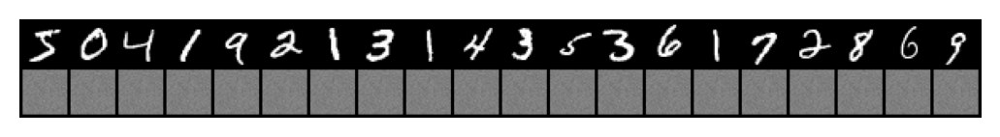
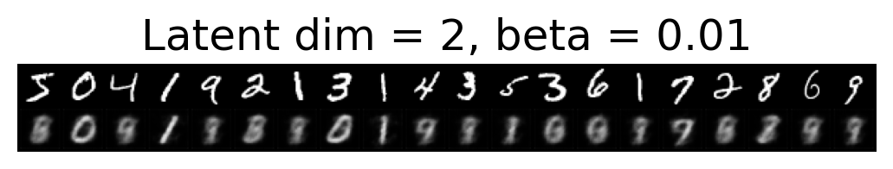
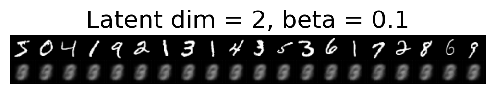
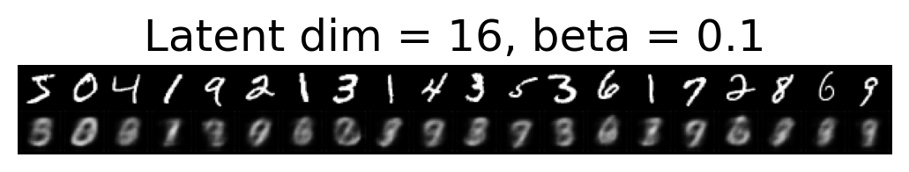
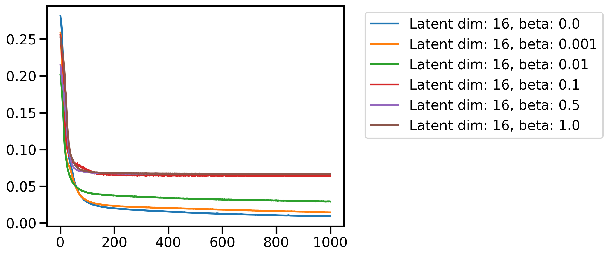
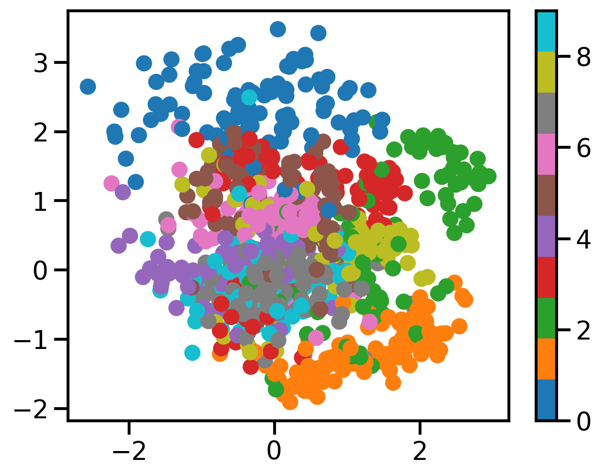

def train_fn(model, inputs, outputs, loss_fn, optimizer,
epochs=100, batch_size=32, verbose=False,
model_type='autoencoder', beta=0.0):
model.train()
losses = []
for epoch in range(epochs):
for i in range(0, len(inputs), batch_size):
x = inputs[i:i+batch_size]
y = outputs[i:i+batch_size]
if model_type == 'autoencoder':
y_pred = model(x)
loss = loss_fn(y_pred, y)
elif model_type == 'vae':
y_pred, mu, std = model(x)
loss = loss_fn(y_pred, y, mu, std, beta)[0]
else:
raise ValueError("Unsupported model type. Use 'autoencoder' or 'vae'.")
optimizer.zero_grad()
loss.backward()
optimizer.step()
losses.append(loss.item())
if verbose:
print(f"Epoch {epoch+1}/{epochs}, loss={loss.item():.4f}")
return lossesBasic Imports
import matplotlib.pyplot as plt
import torch
import torchvision
import torch.nn as nn
import seaborn as sns
import pandas as pd
dist =torch.distributions
import torchsummary
sns.reset_defaults()
sns.set_context(context="talk", font_scale=1)
%matplotlib inline
%config InlineBackend.figure_format='retina'
from functools import partialn_epochs = 100from astra.torch.data import load_mnist# Create a sine activation class similar to ReLU
class Sine(nn.Module):
def __init__(self):
super().__init__()
self.w = nn.Parameter(torch.tensor(1.0))
self.b = nn.Parameter(torch.tensor(0.0))
def forward(self, x):
return torch.sin(self.w * x + self.b)# Autoencoder class with 1 hidden layer and hidden dim = z
class Autoencoder(nn.Module):
def __init__(self, input_size, hidden_size=128, z=2, act = nn.ReLU()):
super(Autoencoder, self).__init__()
self.encoder = nn.Sequential(
nn.Linear(input_size, hidden_size),
act, # Using Sine activation
nn.Linear(hidden_size, z)
)
self.decoder = nn.Sequential(
nn.Linear(z, hidden_size),
act,
nn.Linear(hidden_size, input_size),
nn.Sigmoid() # Sigmoid activation for reconstruction
)
def forward(self, x):
z = self.encoder(x)
x = self.decoder(z)
return xdevice = torch.device("cuda" if torch.cuda.is_available() else "cpu")
devicedevice(type='cuda')dataset = load_mnist()
dataset
MNIST Dataset
length of dataset: 70000
shape of images: torch.Size([28, 28])
len of classes: 10
classes: ['0 - zero', '1 - one', '2 - two', '3 - three', '4 - four', '5 - five', '6 - six', '7 - seven', '8 - eight', '9 - nine']
dtype of images: torch.float32
dtype of labels: torch.int64# Train over 1000 images
train_idx = torch.arange(1000)
test_idx = torch.arange(1000, 2000)
X = dataset.data[train_idx].to(device)
X_test = dataset.data[test_idx].to(device)
# Add a channel dimension
X = X.unsqueeze(1).float()
X_test = X_test.unsqueeze(1).float()
X = X/255.0
X_test = X_test/255.0model = Autoencoder(input_size=784, hidden_size=128, z=32,act=Sine()).to(device)X.shapetorch.Size([1000, 1, 28, 28])model(X.view(-1, 28*28*1)).shapetorch.Size([1000, 784])# Get reconstruction
def get_reconstruction(model, X, model_type='MLP'):
with torch.no_grad():
model.eval()
if model_type == 'MLP':
X = X.view(-1, 28*28*1)
X_hat = model(X)
if type(X_hat) == tuple: # for VAE
X_hat = X_hat[0]
if model_type == 'MLP':
X_hat = X_hat.view(-1, 1, 28, 28)
return X_hatr = get_reconstruction(model, X)
r.max(), r.min(), r.shape(tensor(0.5956, device='cuda:0'),
tensor(0.4148, device='cuda:0'),
torch.Size([1000, 1, 28, 28]))nn.MSELoss()(r, X)tensor(0.2315, device='cuda:0')# Plot original and reconstructed images
def plot_reconstructions(model, X, n=5, model_type='MLP'):
X = X[:n]
X_hat = get_reconstruction(model, X, model_type=model_type)
# Use torchvision.utils.make_grid to make a grid of images
X_grid = torch.cat([X, X_hat], dim=0)
X_grid = torchvision.utils.make_grid(X_grid, nrow=n)
plt.imshow(X_grid.cpu().permute(1, 2, 0).numpy())
plt.axis('off')plot_reconstructions(model, X, 20)
setattr(model, 'device', device)
l = train_fn(model=model, inputs=X.view(-1, 28*28),
outputs=X.view(-1, 28*28),
loss_fn=nn.MSELoss(),
optimizer=torch.optim.Adam(model.parameters(), lr=1e-3),
epochs=1000,
batch_size=500,
verbose=False)r = get_reconstruction(model, X)r.min(), r.max()(tensor(4.3413e-08, device='cuda:0'), tensor(1.0000, device='cuda:0'))_ = plt.plot(l)plot_reconstructions(model, X, 20)plot_reconstructions(model, X_test, 20)import torch.nn as nn
class ConvAutoEncoderMNIST(nn.Module):
def __init__(self, latent_dim=2, act=nn.ReLU()):
super(ConvAutoEncoderMNIST, self).__init__()
self.latent_dim = latent_dim
# Encoder layers with further reduced filters
self.encoder = nn.Sequential(
nn.Conv2d(in_channels=1, out_channels=4, kernel_size=3, padding=1), # 1X28X28 -> 4X28X28
act,
nn.Conv2d(in_channels=4, out_channels=8, kernel_size=3, stride=2, padding=1), # 4X28X28 -> 8X14X14
act,
nn.Conv2d(in_channels=8, out_channels=16, kernel_size=3, stride=2, padding=1), # 8X14X14 -> 16X7X7
act,
nn.Flatten(), # 16X7X7 -> 784
nn.Linear(784, self.latent_dim)
)
# Decoder layers with further reduced filters
self.decoder = nn.Sequential(
nn.Linear(self.latent_dim, 784), # 784 -> 16X7X7
nn.Unflatten(1, (16, 7, 7)), # 784 -> 16X7X7
nn.ConvTranspose2d(in_channels=16, out_channels=8, kernel_size=3, stride=2, padding=1, output_padding=1), # 16X7X7 -> 8X14X14
act,
nn.ConvTranspose2d(in_channels=8, out_channels=4, kernel_size=3, stride=2, padding=1, output_padding=1), # 8X14X14 -> 4X28X28
act,
nn.ConvTranspose2d(in_channels=4, out_channels=1, kernel_size=3, padding=1), # 4X28X28 -> 1X28X28
nn.Sigmoid()
)
def forward(self, x):
z = self.encoder(x)
x_prime = self.decoder(z)
return x_primem = ConvAutoEncoderMNIST(latent_dim=32, act=Sine()).to(device)
torchsummary.summary(m, (1, 28, 28))----------------------------------------------------------------
Layer (type) Output Shape Param #
================================================================
Conv2d-1 [-1, 4, 28, 28] 40
Sine-2 [-1, 4, 28, 28] 0
Sine-3 [-1, 4, 28, 28] 0
Conv2d-4 [-1, 8, 14, 14] 296
Sine-5 [-1, 8, 14, 14] 0
Sine-6 [-1, 8, 14, 14] 0
Conv2d-7 [-1, 16, 7, 7] 1,168
Sine-8 [-1, 16, 7, 7] 0
Sine-9 [-1, 16, 7, 7] 0
Flatten-10 [-1, 784] 0
Linear-11 [-1, 32] 25,120
Linear-12 [-1, 784] 25,872
Unflatten-13 [-1, 16, 7, 7] 0
ConvTranspose2d-14 [-1, 8, 14, 14] 1,160
Sine-15 [-1, 8, 14, 14] 0
Sine-16 [-1, 8, 14, 14] 0
ConvTranspose2d-17 [-1, 4, 28, 28] 292
Sine-18 [-1, 4, 28, 28] 0
Sine-19 [-1, 4, 28, 28] 0
ConvTranspose2d-20 [-1, 1, 28, 28] 37
Sigmoid-21 [-1, 1, 28, 28] 0
================================================================
Total params: 53,985
Trainable params: 53,985
Non-trainable params: 0
----------------------------------------------------------------
Input size (MB): 0.00
Forward/backward pass size (MB): 0.26
Params size (MB): 0.21
Estimated Total Size (MB): 0.47
----------------------------------------------------------------m(X).shapetorch.Size([1000, 1, 28, 28])latent_dim_ranges = [2, 4, 8, 16, 32, 64, 128]caes = {}
for latent_dim in latent_dim_ranges[:]:
caes[latent_dim] = ConvAutoEncoderMNIST(latent_dim=latent_dim, act=Sine()).to(device)
setattr(caes[latent_dim], 'device', device)torchsummary.summary(caes[2], (1, 28, 28))----------------------------------------------------------------
Layer (type) Output Shape Param #
================================================================
Conv2d-1 [-1, 4, 28, 28] 40
Sine-2 [-1, 4, 28, 28] 0
Sine-3 [-1, 4, 28, 28] 0
Conv2d-4 [-1, 8, 14, 14] 296
Sine-5 [-1, 8, 14, 14] 0
Sine-6 [-1, 8, 14, 14] 0
Conv2d-7 [-1, 16, 7, 7] 1,168
Sine-8 [-1, 16, 7, 7] 0
Sine-9 [-1, 16, 7, 7] 0
Flatten-10 [-1, 784] 0
Linear-11 [-1, 2] 1,570
Linear-12 [-1, 784] 2,352
Unflatten-13 [-1, 16, 7, 7] 0
ConvTranspose2d-14 [-1, 8, 14, 14] 1,160
Sine-15 [-1, 8, 14, 14] 0
Sine-16 [-1, 8, 14, 14] 0
ConvTranspose2d-17 [-1, 4, 28, 28] 292
Sine-18 [-1, 4, 28, 28] 0
Sine-19 [-1, 4, 28, 28] 0
ConvTranspose2d-20 [-1, 1, 28, 28] 37
Sigmoid-21 [-1, 1, 28, 28] 0
================================================================
Total params: 6,915
Trainable params: 6,915
Non-trainable params: 0
----------------------------------------------------------------
Input size (MB): 0.00
Forward/backward pass size (MB): 0.26
Params size (MB): 0.03
Estimated Total Size (MB): 0.29
----------------------------------------------------------------torchsummary.summary(caes[128], (1, 28, 28))----------------------------------------------------------------
Layer (type) Output Shape Param #
================================================================
Conv2d-1 [-1, 4, 28, 28] 40
Sine-2 [-1, 4, 28, 28] 0
Sine-3 [-1, 4, 28, 28] 0
Conv2d-4 [-1, 8, 14, 14] 296
Sine-5 [-1, 8, 14, 14] 0
Sine-6 [-1, 8, 14, 14] 0
Conv2d-7 [-1, 16, 7, 7] 1,168
Sine-8 [-1, 16, 7, 7] 0
Sine-9 [-1, 16, 7, 7] 0
Flatten-10 [-1, 784] 0
Linear-11 [-1, 128] 100,480
Linear-12 [-1, 784] 101,136
Unflatten-13 [-1, 16, 7, 7] 0
ConvTranspose2d-14 [-1, 8, 14, 14] 1,160
Sine-15 [-1, 8, 14, 14] 0
Sine-16 [-1, 8, 14, 14] 0
ConvTranspose2d-17 [-1, 4, 28, 28] 292
Sine-18 [-1, 4, 28, 28] 0
Sine-19 [-1, 4, 28, 28] 0
ConvTranspose2d-20 [-1, 1, 28, 28] 37
Sigmoid-21 [-1, 1, 28, 28] 0
================================================================
Total params: 204,609
Trainable params: 204,609
Non-trainable params: 0
----------------------------------------------------------------
Input size (MB): 0.00
Forward/backward pass size (MB): 0.26
Params size (MB): 0.78
Estimated Total Size (MB): 1.05
----------------------------------------------------------------plot_reconstructions(caes[2], X, 20, model_type='CNN')loss = {}
for latent_dim in latent_dim_ranges[:]:
print(f"Training for latent_dim = {latent_dim}")
loss[latent_dim] = train_fn(model=caes[latent_dim],
inputs=X,
outputs=X,
loss_fn=nn.MSELoss(),
optimizer=torch.optim.Adam(caes[latent_dim].parameters(), lr=1e-3),
epochs=1000,
batch_size=500,
verbose=False)Training for latent_dim = 2
Training for latent_dim = 4
Training for latent_dim = 8
Training for latent_dim = 16
Training for latent_dim = 32
Training for latent_dim = 64
Training for latent_dim = 128for latent_dim in latent_dim_ranges[:]:
plt.plot(loss[latent_dim], label=f'Latent dim: {latent_dim}')
plt.legend()<matplotlib.legend.Legend at 0x7f0c2d5fd760>
# Plot reconstructions
plot_reconstructions(caes[2], X, 20, model_type='CNN')plot_reconstructions(caes[2], X_test, 20, model_type='CNN')plot_reconstructions(caes[4], X, 20, 'CNN')plot_reconstructions(caes[8], X, 20, 'CNN')plot_reconstructions(caes[16], X, 20, 'CNN')plot_reconstructions(caes[128], X, 20, 'CNN')plot_reconstructions(caes[128], X_test, 20, 'CNN')# Give a random input to the model and get the output
def get_random_output(model, n=5, latent_dim=2):
with torch.no_grad():
model.eval()
z = torch.randn(n, latent_dim).to(device)
X_hat = model.decoder(z)
return X_hat
# Plot random outputs
def plot_random_outputs(model, n=5, latent_dim=2):
X_hat = get_random_output(model, n, latent_dim)
X_grid = torchvision.utils.make_grid(torch.tensor(X_hat), nrow=n)
plt.imshow(X_grid.cpu().permute(1, 2, 0).numpy())
plt.axis('off')plot_random_outputs(caes[2], n=20)/tmp/ipykernel_1330344/4035786813.py:12: UserWarning: To copy construct from a tensor, it is recommended to use sourceTensor.clone().detach() or sourceTensor.clone().detach().requires_grad_(True), rather than torch.tensor(sourceTensor).
X_grid = torchvision.utils.make_grid(torch.tensor(X_hat), nrow=n)plot_random_outputs(caes[8], n=20, latent_dim=8)/tmp/ipykernel_1330344/4035786813.py:12: UserWarning: To copy construct from a tensor, it is recommended to use sourceTensor.clone().detach() or sourceTensor.clone().detach().requires_grad_(True), rather than torch.tensor(sourceTensor).
X_grid = torchvision.utils.make_grid(torch.tensor(X_hat), nrow=n)plot_random_outputs(caes[128], n=20, latent_dim=128)/tmp/ipykernel_1330344/4035786813.py:12: UserWarning: To copy construct from a tensor, it is recommended to use sourceTensor.clone().detach() or sourceTensor.clone().detach().requires_grad_(True), rather than torch.tensor(sourceTensor).
X_grid = torchvision.utils.make_grid(torch.tensor(X_hat), nrow=n)# Interpolate between two points in latent space
def interpolate(model, z1, z2, n=5):
with torch.no_grad():
model.eval()
z = torch.zeros(n, z1.shape[1]).to(device)
for i in range(n):
z[i] = z1 + (z2 - z1) * (i / (n - 1))
X_hat = model.decoder(z)
return X_hat
# Plot interpolation
def plot_interpolation(model, img1, img2, n=5):
z1 = model.encoder(X[img1].unsqueeze(0))
z2 = model.encoder(X[img2].unsqueeze(0))
X_hat = interpolate(model, z1, z2, n)
X_grid = torchvision.utils.make_grid(X_hat, nrow=n)
plt.imshow(X_grid.cpu().permute(1, 2, 0).numpy())
plt.axis('off')plot_interpolation(caes[2], 0, 1, 20)# Interactive widget to plot interpolation
from ipywidgets import interact, IntSlider
def plot_interpolation_widget(img1, img2, latent_dim=2, n=20):
plot_interpolation(caes[latent_dim], img1, img2, n)
interact(plot_interpolation_widget, img1=IntSlider(0, 0, 1000),
img2=IntSlider(1, 0, 1000),
latent_dim=latent_dim_ranges,
n=IntSlider(20, 5, 50))<function __main__.plot_interpolation_widget(img1, img2, latent_dim=2, n=20)># plot scatter plot on 2d space for latent dim = 2 for all images
def plot_scatter(model, X, y, n=1000, latent_dim=2):
with torch.no_grad():
model.eval()
z = model.encoder(X[:n].view(-1, 1, 28, 28)).cpu().numpy()
plt.scatter(z[:, 0], z[:, 1], c=y[:n], cmap='tab10')
plt.colorbar()
plot_scatter(caes[2], X, dataset.targets)def distance_between_representation(model, img1_id, img2_id):
with torch.no_grad():
model.eval()
z1 = model.encoder(X[img1_id].unsqueeze(0))
z2 = model.encoder(X[img2_id].unsqueeze(0))
return torch.dist(z1, z2).item()
def find_all_occurences_digit(digit):
return torch.where(dataset.targets == digit)[0]all_0s = find_all_occurences_digit(0)
all_1s = find_all_occurences_digit(1)# Find distance between two 0s
distance_between_representation(caes[2], all_0s[0], all_0s[1])0.2112869769334793distance_between_representation(caes[4], all_0s[0], all_0s[1])0.9414359331130981distance_between_representation(caes[128], all_0s[0], all_0s[1])7.251440525054932def plot_latent_space_2d(model, x_min=-2.0, x_max=2.0, y_min=-2.0, y_max=2.0, n=20):
xx, yy = torch.meshgrid(torch.linspace(x_min, x_max, n), torch.linspace(y_min, y_max, n))
z_grid = torch.cat([xx.reshape(-1, 1), yy.reshape(-1, 1)], dim=1)
z_grid = z_grid.to(device)
# Get the output from the decoder
X_hat = model.decoder(z_grid)
X_hat = X_hat.view(n, n, 28, 28)
X_hat = X_hat.cpu().detach().numpy()
# Plot the output
plt.figure(figsize=(8, 8))
import numpy as np
plt.imshow(np.block(list(map(list, X_hat))), cmap='gray')
plt.axis('off')def find_latent_space_lims(model):
with torch.no_grad():
model.eval()
zs = model.encoder(X.view(-1, 1, 28, 28)).cpu().numpy()
# Find the min and max of the latent space
x_min = zs[:, 0].min() - 0.5
x_max = zs[:, 0].max() + 0.5
y_min = zs[:, 1].min() - 0.5
y_max = zs[:, 1].max() + 0.5
return x_min, x_max, y_min, y_maxdef plot_latent_space_auto_lims(model, n=20):
x_min, x_max, y_min, y_max = find_latent_space_lims(model)
plot_latent_space_2d(model, x_min, x_max, y_min, y_max, n)plot_latent_space_auto_lims(caes[2])class ConvVAEMNIST(nn.Module):
def __init__(self, latent_dim=2, act=nn.ReLU()):
super(ConvVAEMNIST, self).__init__()
self.latent_dim = latent_dim
# Encoder layers with further reduced filters
self.encoder = nn.Sequential(
nn.Conv2d(in_channels=1, out_channels=4, kernel_size=3, padding=1), # 1X28X28 -> 4X28X28
act,
nn.Conv2d(in_channels=4, out_channels=8, kernel_size=3, stride=2, padding=1), # 4X28X28 -> 8X14X14
act,
nn.Conv2d(in_channels=8, out_channels=16, kernel_size=3, stride=2, padding=1), # 8X14X14 -> 16X7X7
act,
nn.Flatten(), # 16X7X7 -> 784
nn.Linear(784, self.latent_dim*2)
)
# Decoder layers with further reduced filters
self.decoder = nn.Sequential(
nn.Linear(self.latent_dim, 784), # 784 -> 16X7X7
nn.Unflatten(1, (16, 7, 7)), # 784 -> 16X7X7
nn.ConvTranspose2d(in_channels=16, out_channels=8, kernel_size=3, stride=2, padding=1, output_padding=1), # 16X7X7 -> 8X14X14
act,
nn.ConvTranspose2d(in_channels=8, out_channels=4, kernel_size=3, stride=2, padding=1, output_padding=1), # 8X14X14 -> 4X28X28
act,
nn.ConvTranspose2d(in_channels=4, out_channels=1, kernel_size=3, padding=1), # 4X28X28 -> 1X28X28
nn.Sigmoid()
)
def forward(self, x):
x = self.encoder(x)
# Chunk to get mu and logvar
mu, logvar = torch.chunk(x, 2, dim=1)
std = torch.exp(0.5 * logvar)
eps = torch.distributions.normal.Normal(0, 1).sample(std.shape).to(device)
z = mu + eps * std
x = self.decoder(z)
return x, mu, logvardef VAE_loss(x, x_hat, mu, log_var, beta=1):
# Reconstruction loss
recon_loss = nn.MSELoss()(x_hat, x)
std = torch.exp(0.5 * log_var)
prior = torch.distributions.normal.Normal(0, 1)
post = torch.distributions.normal.Normal(mu, std)
kl_loss = torch.distributions.kl.kl_divergence(post, prior).mean()
return recon_loss + beta * kl_loss, recon_loss, kl_loss# Forwards pass of untrained model
m = ConvVAEMNIST(latent_dim=32, act=Sine()).to(device)
X_hat, mu, std = m(X)X.shape, X_hat.shape, mu.shape, std.shape(torch.Size([1000, 1, 28, 28]),
torch.Size([1000, 1, 28, 28]),
torch.Size([1000, 32]),
torch.Size([1000, 32]))VAE_loss(X, X_hat, mu, std, beta=1)(tensor(0.2179, device='cuda:0', grad_fn=<AddBackward0>),
tensor(0.2157, device='cuda:0', grad_fn=<MseLossBackward0>),
tensor(0.0022, device='cuda:0', grad_fn=<MeanBackward0>))loss_dim_betas = {}
c_vaes = {}
latent_dim_subset = [2, 16, 256]
betas = [0.0, 0.001, 0.01, 0.1, 0.5, 1.0]
for latent_dim in latent_dim_subset:
print(f"Training for latent_dim = {latent_dim}")
c_vaes[latent_dim] = {}
loss_dim_betas[latent_dim] = {}
for beta in betas:
print(f"Training for beta = {beta}")
c_vaes[latent_dim][beta] = ConvVAEMNIST(latent_dim=latent_dim, act=Sine()).to(device)
setattr(c_vaes[latent_dim][beta], 'device', device)
loss_dim_betas[latent_dim][beta] = train_fn(model=c_vaes[latent_dim][beta],
inputs=X,
outputs=X,
loss_fn=VAE_loss,
optimizer=torch.optim.Adam(c_vaes[latent_dim][beta].parameters(), lr=1e-3),
epochs=1000,
batch_size=500,
verbose=False,
model_type='vae',
beta=beta)
Training for latent_dim = 2
Training for beta = 0.0
Training for beta = 0.001
Training for beta = 0.01
Training for beta = 0.1
Training for beta = 0.5
Training for beta = 1.0
Training for latent_dim = 16
Training for beta = 0.0
Training for beta = 0.001
Training for beta = 0.01
Training for beta = 0.1
Training for beta = 0.5
Training for beta = 1.0
Training for latent_dim = 256
Training for beta = 0.0
Training for beta = 0.001
Training for beta = 0.01
Training for beta = 0.1
Training for beta = 0.5
Training for beta = 1.0# Plot reconstructions
for latent_dim in latent_dim_subset:
for beta in betas:
plt.figure()
plot_reconstructions(c_vaes[latent_dim][beta], X, 20, model_type='CNN')
plt.title(f"Latent dim = {latent_dim}, beta = {beta}")


for latent_dim in latent_dim_subset:
plt.figure()
for beta in betas:
plt.plot(loss_dim_betas[latent_dim][beta], label=f'Latent dim: {latent_dim}, beta: {beta}')
plt.legend(bbox_to_anchor=(1.05, 1), loc='upper left')
# Plot scatter
plot_scatter(c_vaes[2][0.0], X, dataset.targets)plot_scatter(c_vaes[2][0.001], X, dataset.targets)
plot_scatter(c_vaes[2][0.01], X, dataset.targets)plot_latent_space_auto_lims(c_vaes[2][0.0])plot_latent_space_auto_lims(c_vaes[2][0.001])distance_between_representation(c_vaes[2][0.0], all_0s[0], all_0s[1])0.8384506702423096distance_between_representation(c_vaes[2][0.001], all_0s[0], all_0s[1])0.22767327725887299distance_between_representation(c_vaes[2][1], all_0s[0], all_0s[1])0.0021541789174079895Distance between different digits
distance_between_representation(c_vaes[2][0.0], all_0s[0], all_1s[0])11.220616340637207distance_between_representation(c_vaes[2][0.001], all_0s[0], all_1s[0])4.362278461456299Todo
- Show Fashion MNIST results
- Show tSNE plots
- Create GIF of interpolation
- Show on harder datasets (CIFAR, CelebA, etc.)
- Show for varying number of Monte Carlo samples
- Show from the Bayesian perspective
- Show the performance of the model on the test set